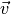
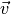
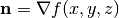
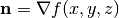

2. Geometry¶
2.1. Reflective Surfaces¶
In general, a surface can be written in the form  . If a
neutron is traveling in direction  and crosses a reflective
surface of the above form, it can be shown that the velocity vector will then
become
. If a
neutron is traveling in direction  and crosses a reflective
surface of the above form, it can be shown that the velocity vector will then
become

where  is a unit vector normal to the surface at the
point of the surface crossing. The direction of the surface normal will be the
gradient to the surface at the point of crossing, i.e. .
is a unit vector normal to the surface at the
point of the surface crossing. The direction of the surface normal will be the
gradient to the surface at the point of crossing, i.e. .